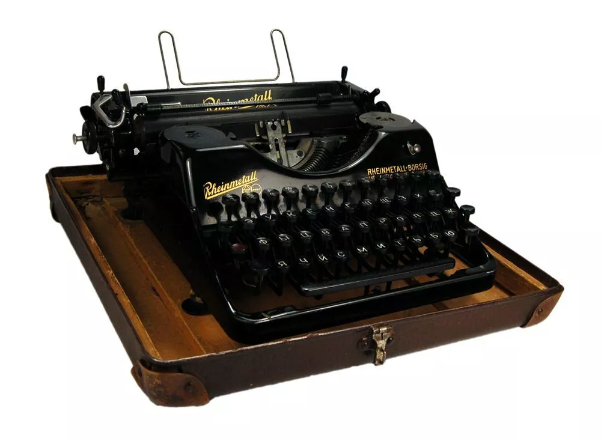

Нелегкий труд
С момента появления письменности, процесс письма был долгим и трудозатратным. Слова и символы должны были быть тщательно и аккуратно скопированы вручную, дословно, снова и снова, чтобы сделать одну копию или записать одну запись. На самом деле, процесс написания был настолько трудным, что были люди-писцы, чьи жизни были посвящены только написанию и копированию.
После этого успеха люди начали искать еще больше способов улучшить письмо и сделать его проще. Следующая крупная революция в письменной форме произошла в середине 1600-х годов в форме пишущей машины Уильяма Петти. В патенте машины Чарльз I описал ее как машину, которая "Возможно, через час выучится, и это принесет большую пользу юристам, писцам, купцы, ученые, регистраторы, клерки и так далее; это экономит труд экспертизы, обнаружение или предотвращение фальсификаций, а также ведение дел с легкостью и скоростью, а значит, и с личной жизнью.
60 лет спустя
В 1714 году, почти шестьдесят лет спустя, Генри Милль создал следующую заметную пишущую машинку. В патенте, выданном ему королевой, пишущая машинка Милля была описана как "искусственный механизм или метод для впечатления или транскрибирования букв, по одному или постепенно, один за другим, как в письменной форме, посредством чего все записи могут быть настолько аккуратными и точными, чтобы их нельзя было отличить от печати" впечатление более глубокое и продолжительное, чем любое другое письмо…»
Первый писательский автомат
Типограф Уильяма Остина Берта, изобретенный в 1829 году, стал первым американским писательским автоматом. Человек печатал на «Типографе» Берта, вращая большое колесо со множеством символов, пока нужный символ не оказался перед точкой набора текста. Затем молоток перенес бы тип на поверхность бумаги, создав на нем отпечаток. Это, однако, было очень медленным процессом - даже медленнее, чем ручное письмо. Этот способ был также очень подвержен к орфографическим ошибкам, как доказано в письме, которое он написал своей жене.
Первая коммерчески успешная машина
В 1831 году появилась следующая известная пишущая машинка, рожденная во время великого конфликта внутри самой Америки. Первоначально созданный Джоном Праттом как хобби, «Птеротип» в конечном итоге стал источником вдохновения для первой коммерчески успешной пишущей машинки. Поскольку получение патента было очень трудным во время гражданской войны, Пратт решил закончить свою машину в Лондоне, где он смог получить британский патент в 1864 году. Его Птеротип вызвал большой интерес и спекуляции у многих английских граждан.
В этом описании, применимом как к пишущим машинкам, так и к более новым моделям, описаны многие важные преимущества пишущей машинки. К несчастью для Пратта, к тому времени, когда он получил американский патент на свой «птеротип», Чарльзу Лэтэму Шоулсу уже был выдан патент на его печатную машину. Из-за этой разницы во времени модель Шоулза стала намного более известной в Америке и затмила Птеротип. Чарльз Лэтэм Шоулз обычно известен большинству как изобретатель первой пишущей машинки.
Шоулз знал, что без денег их новая машина никуда не денется, какой бы революционной она ни была. Шоулз решил связаться с людьми для поддержки, и поэтому начал писать инвесторам (со своим новым Type-Writer, конечно). Один из инвесторов, Джеймс Денсмор, очень интересовался пишущей машиной Шоулза. Чтобы закрепить свою позицию, Джеймс с готовностью заплатил им те шестьсот долларов, которые они просили взамен на часть компании. Он также остался в проекте, постоянно подталкивая Солеса к созданию идеальной машины.
Раскладка клавиатуры, дожившая до наших дней
В то время как Денсмор был абсолютно уверен в печатной машине, говоря о «пишущей машинке» (названии, которое он создал): «Я верю в это изобретение от самого верхнего угла моей шляпы до самой нижней части гвоздей моего каблука…», Шоулз не был так уверен в изобретенной им машине и решил продать ее Денсмору. В 1872 году его друг Йост навестил его в Милуоки и порекомендовал ему фабрику E. Remington & Son, фабрику по производству оружия и швейных машин до окончания гражданской войны.
По мере роста популярности и успеха пишущей машинки Sholes, когда люди начали приспосабливаться к ее новой раскладке клавиатуры, другие компании увидели успех QWERTY и последовали его примеру. Сегодня почти каждая клавиатура создается в раскладке QWERTY - прекрасной демонстрации длительного воздействия печатной машинки Sholes-Glidden. Созданная Джеймсом Б. Хаммондом модельная машинка Hammond появилась вскоре после выпуска печатной машинки Sholes.
Популяризация печатных машинок
Из-за общего неправильного понимания того, что такое пишущая машинка, печатная машинка не очень хорошо продавалась, когда она была впервые выпущена. Люди часто путали печатную машинку со старой печатной машиной, не понимая, что печатная машинка была совершенно новым революционным изобретением. Когда люди начали понимать преимущества пишущей машинки Sholes-Glidden , общество изменилось к лучшему невероятным образом.
Вышеупомянутая статья в журнале Scientific American писала, что «копирование, а также написание и распространение проповедей и лекций, не говоря уже о письмах и редакционных статьях, претерпят революцию, столь же замечательную, как революция, произошедшая в книгах с изобретением книгопечатания.»
Тем не менее, даже с этими улучшениями, которые принесли в жизнь пишущие машинки, многие все еще возражали против повсеместного применения пишущей машинки.
Новые возможности для женщин
Мало того, что они улучшили повседневную жизнь и увеличили рабочий процесс, пишущие машинки создали много новых возможностей для женщин. Из-за растущей популярности печатной машинки в конце 1800-х годов женщинам была предоставлена новая возможность войти в бизнес.
Пишущая машинка является одним из самых революционных изобретений в истории. Это ускорило работу писателей, производительность в офисах и повысило удобство для работников. От писателей, которые привлекали к печатным машинкам общественное внимание, к любителям, чьи изобретения привели к созданию более универсальной машины. Каждый из них вносил свой вклад в работу предшественнника. После долгого путешествия печатная машинка наконец-то достигла своей цели, проникнув в жизнь каждого мужчины и женщины.
Современность
Сегодня, каждый использует какую-то клавиатуру. Почти каждая из этих клавиатур отформатирована в раскладке Sholes QWERTY, и каждая из этих клавиатур включает клавишу Shift Хэммонда. Пишущая машинка, хотя и очень забытая сегодня, до сих пор живет практически во всем, созданном человеком: от клавиатур на наших ноутбуках до текстов в наших журналах, производимых печатными машинками по всему миру.